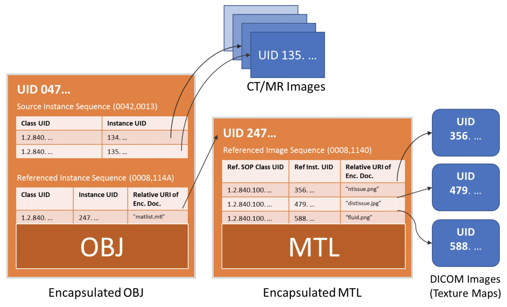

| DICOM PS3.17 2024a - Explanatory Information |
|---|
This section explains the encapsulation of a 3D manufacturing model file of the OBJ type inside a DICOM instance. The goal of encapsulating a model rather than transforming the data into a different representation is to facilitate preservation of the 3D file in the exact form that it is used with extant manufacturing devices. At the same time encapsulation populates DICOM header elements that record clinical information absent from the OBJ format, including unambiguously associating it with the patient for whose care the model was created. Encapsulation also makes it possible to link to the images from which the model was derived, even if these came from different studies.
The OBJ encapsulation case is slightly more complicated than that of STL (Annex IIII). The OBJ has supporting files (material library and texture maps). The relationship between the multiple original files and the corresponding DICOM instances is shown in Figure RRRR.1-1.
|  |
Figure RRRR.1-1. Relationship between OBJ, MTL and Texture Map image files and corresponding DICOM Instances
| DICOM PS3.17 2024a - Explanatory Information |
|---|